G1 vs G2 — Storyline Comparison
IFS-FESOM km-scale storyline simulations · Three climate states · Initialization update
assessment
What changed?
Two key differences between Generation 1 (G1) and Generation 2 (G2):
⚡ G2 model update: Bugfixed model version with a new runoff scheme.
🔄 G2 initialization: All three experiments now branch from long
EERIE coupled runs, removing the mixed-IC inconsistency present in G1.
Experiment Configurations
| Experiment |
Climate state |
Forcing |
G1 Initialization |
G2 Initialization |
| Cont |
~1950, cooler |
CMIP6-hist 1950 (fixed) |
Atm: ERA5 (2017-01-01)
Ocean: 5-yr standalone spinup (1945–1949) mixed |
Branched from EERIE control run (1950) consistent |
| Hist |
Present-day |
CMIP6-SSP3-7.0, transient 2017–2024 |
Atm: ERA5 (2017-01-01)
Ocean: 5-yr standalone spinup (2012–2016) mixed |
Branched from EERIE historical run (2017) consistent |
| Tp2K |
+2 K warmer |
CMIP6-SSP3-7.0, 2050 (fixed) |
Branched from NextGEMS coupled run (2040) mixed |
Branched from EERIE projection run (2050) consistent |
IC Comparison at a Glance
Cont (~1950)
G1 ERA5 atm + standalone FESOM ocean 1945–49 G1
G2 EERIE control branch 1950 — fully coupled G2
Hist (present-day)
G1 ERA5 atm + standalone FESOM ocean 2012–16 G1
G2 EERIE historical branch 2017 — fully coupled
G2
Tp2K (+2 K)
G1 NextGEMS branch 2040 — different coupled system
G1
G2 EERIE projection branch 2050 — same framework
G2
⚠ G1 had an inherent inconsistency: Cont and Hist used ERA5 atmosphere + standalone
FESOM ocean, while Tp2K used a fully coupled NextGEMS branch. G2 resolves this by using the EERIE
coupled framework consistently for all three experiments.
G2 Global Mean Temperature — Per Member
G2 runs 5 ensemble members for the complete simulation period (unlike G1 which only had
5 members for the end of 2024). The ensemble spread is negligible, confirming tight nudging control.
| Member |
Cont (K) |
Hist (K) |
Tp2K (K) |
Hist − Cont (K) |
Tp2K − Hist (K) |
Tp2K − Cont (K) |
| E1 |
286.7 |
287.5 |
288.9 |
0.9 |
1.3 |
2.2 |
| E2 |
286.7 |
287.6 |
288.9 |
0.9 |
1.3 |
2.2 |
| E3 |
286.7 |
287.5 |
288.9 |
0.9 |
1.4 |
2.2 |
| E4 |
286.7 |
287.5 |
288.9 |
0.9 |
1.4 |
2.2 |
| E5 |
286.7 |
287.6 |
288.9 |
0.9 |
1.3 |
2.2 |
| ENS MEAN |
286.7 |
287.5 |
288.9 |
0.9 |
1.3 |
2.2 |
G1 vs G2 ΔT Comparison
⚠ The Cont→Hist warming signal is smaller in G2 (+0.9 K) than in G1
(+1.3 K), likely reflecting the improved EERIE ocean initialization providing a more
physically consistent 1950 climate state. The Cont→Tp2K signal is similar (G2: +2.2 K vs G1: +2.3
K).
| Pair |
G1 ΔT |
G2 ΔT (ENS MEAN) |
Difference |
| Cont → Hist |
≈ +1.3 K |
+0.9 K |
−0.4 K |
| Hist → Tp2K |
≈ +1.0 K |
+1.3 K |
+0.3 K |
| Cont → Tp2K |
≈ +2.3 K |
+2.2 K |
−0.1 K |
Large-scale Climate State
Zonal mean temperature, time series, and cross-experiment spread
G1 vs G2 vs ERA5 — Hist Daily T2M (2017–2024)
Daily 2m temperature time series for the Hist experiment, comparing Gen1 (blue), Gen2
(red), and ERA5 (black) over the full simulation period. Dashed lines show time-period means. Yellow
shading marks the spinup year (2017).
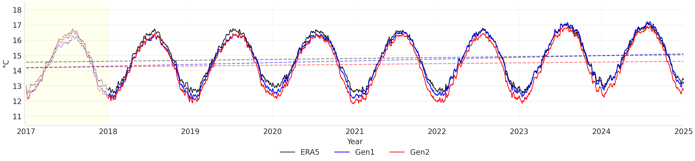
TS_hist_2017-2024_2t_comparison — Daily global mean 2m
temperature for the Hist experiment: ERA5 (black), Gen1 (blue), Gen2 (red), 2017–2024.
Dashed lines = time-mean. Yellow shading = spinup period.
Analysis
✅ Phase: Both G1 and G2 capture the seasonal cycle timing
accurately throughout the full 2017–2024 period. The annual cycle phase is well locked to ERA5 in
all years, consistent with the spectral nudging constraining large-scale circulation.
▼ G1 cold bias: G1 (blue) runs systematically cooler than
ERA5 throughout most of the period, particularly in the earlier years. The time-mean dashed lines show
G1 sitting roughly 0.2–0.3 K
below ERA5, with the cold bias most visible during summer maxima and winter minima.
▼ G2 cold bias: G2 (red) is noticeably cooler than G1,
pushing the time mean further below ERA5. The cold bias persists across all seasons, resulting in a
systematic offset of roughly 0.4–0.5 K relative to ERA5.
📋 Spinup (2017, yellow): Both generations show transient
adjustment during the spinup year. The time series stabilize quickly after the initial adjustment,
maintaining their respective systematic offsets from ERA5 throughout the rest of the simulation.
The transition from G1 to G2 with the EERIE-based ocean
initialization introduces a stronger global mean cold bias in the Hist climate state, reflecting the
underlying state of the long coupled spinup used for the initial conditions.
All Experiments — Daily T2M (2017–2024)
Daily global mean 2m temperature for all three climate states across both generations. G1 = dotted lines,
G2 = solid lines. Colours: Cont (blue), Hist (green), Tp2K (orange). Dashed horizontals = time-period
means. Yellow shading = spinup (2017).
ⓘ Note on data gaps: G2 Cont data starts
from 2018 (2017 retrieval pending from the data bridge); Tp2K has a short gap around mid-2022. Both are
plotting artefacts only — the model data exists and has been produced.
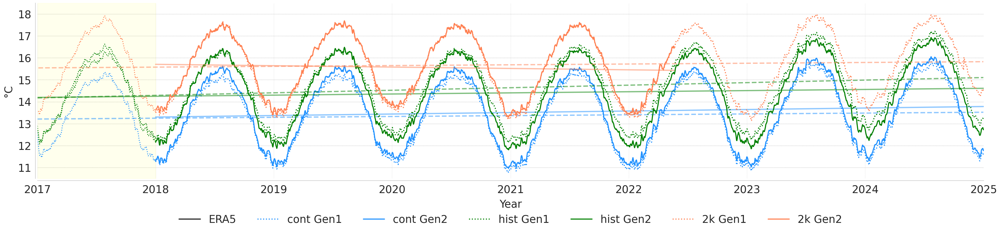
TS_2t_all_exp — Daily global mean 2m temperature: ERA5
(black), Cont G1 (blue dotted) / G2 (blue solid), Hist G1 (green dotted) / G2 (green solid),
Tp2K G1 (orange dotted) / G2 (orange solid). Dashed horizontals = time-means per experiment.
Analysis
🌡 Clear climate state separation: The three experiments sit in
well-separated temperature bands across all years. Cont (blue, ~13 °C mean) represents the
cooler pre-industrial-like climate; Hist (green, ~14.2 °C) the present-day; and Tp2K (orange,
~15.7 °C) the warmer world. The separation is stable and consistent throughout, confirming
the experiments correctly represent their intended background climate states.
✍ Improved climate state separation in G2: The transition from G1
(dotted lines) to G2 (solid lines) noticeably corrects the baseline global-mean temperatures across
experiments. In G1, differing standalone ocean spinups caused the temperature gaps between experiments
to be artificially distorted (~1.4 K Cont→Hist, ~1.0 K Hist→Tp2K). In G2,
utilizing consistent EERIE-coupled initial states better anchors the baselines, bringing the temperature
gaps closer to the intended atmospheric forcing targets (+0.9 K for Cont→Hist, and
+1.3 K for Hist→Tp2K).
✅ Seasonal cycle phase: All six model runs accurately reproduce the
observed seasonal cycle timing. No phase drift is observed across the 8-year period, as expected from
spectral nudging anchoring the large-scale circulation.
📊 Time-mean offsets: The horizontal dashed lines clearly quantify
the warming between experiments. The corrected baselines in G2 ensure a more accurate representation of
the relative warming scenarios.
Zonal Mean T2M — G1 vs G2 (Hist)
Time-mean (2018–2024) zonal mean 2m temperature for the Hist experiment: Gen1 (blue), Gen2 (red), ERA5
(black). Reveals where the initialization change matters most across latitudes.
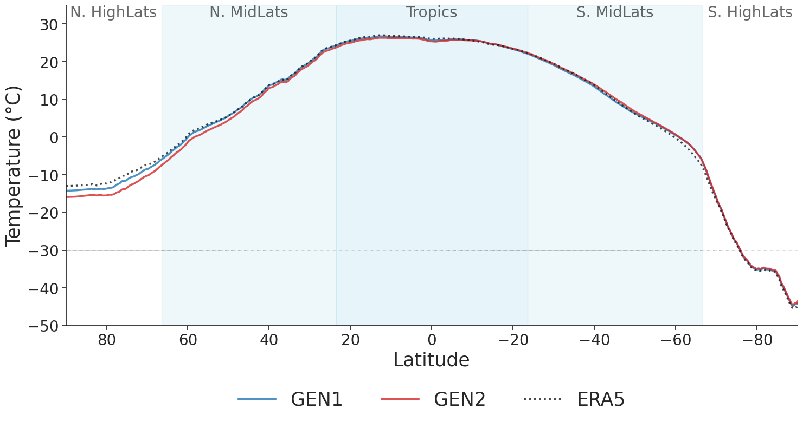
ZNMN_g1vg2 — Time-mean zonal mean 2m temperature for
the Hist experiment. Gen1 (blue), Gen2 (red), ERA5 (black).
Analysis
🌎 Tropics & S. mid-lats (60°S–60°S): G1 and G2 are nearly
indistinguishable from each other and from ERA5 across the tropics and southern mid-latitudes. This
confirms that nudging effectively constrains the large-scale circulation in these regions regardless of
the IC generation.
▼ N. High Lats (60°N–90°N): G1 (blue) runs slightly cooler than
ERA5, with a cold bias peaking near the Arctic (~1–3 °C). G2 (red) exacerbates this cold
bias, dropping the zonal mean further below ERA5. This is the most striking difference between
generations and likely
reflects the significantly colder EERIE Arctic ocean state used for G2's initial conditions.
▲ N. High Lats (60°N–90°N): Both G1 and G2 diverge from ERA5. The
residual bias in the Northern high latitudes is a known structural limitation tied to Arctic
sea-ice.
📊 Overall: The transition from G1 to G2 introduces a stronger
high-latitude cold bias in the Northern Hemisphere, while maintaining identical performance across the
tropics and mid-latitudes.
Zonal Mean T2M — All Experiments (G2)
Time-mean zonal mean 2m temperature for all three experiments, both generations: Cont G1/G2 (blue), Hist
G1/G2 (green), Tp2K G1/G2 (red/orange). ERA5 shown as the present-day reference (black). Illustrates the
latitudinal structure of climate change signals across the three backgrounds.
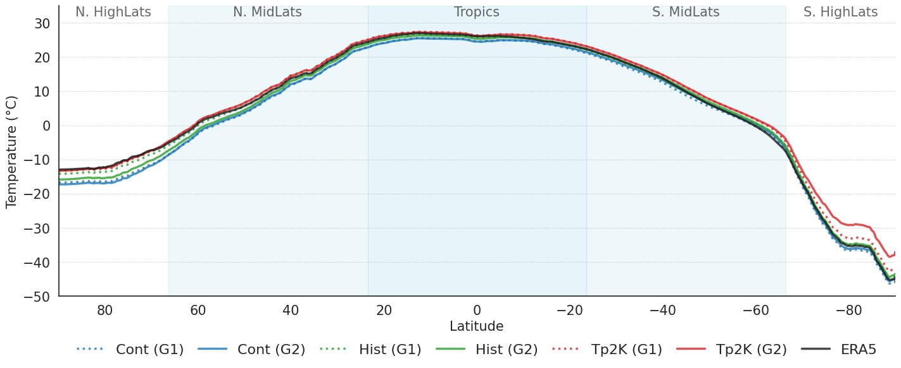
ZNMN_allexps — Time-mean zonal mean 2m temperature for
all experiments. Cont G1 (blue dotted) / G2 (blue solid), Hist G1 (green dotted) / G2 (green
solid), Tp2K G1 (red dotted) / G2 (red solid), ERA5 (black).
Analysis
🌡 Experiment separation across latitudes: The three climate
states are well separated at all latitudes. In the N. high lats, Cont sits ~5–6°C
colder than Hist, and Hist ~2–3°C colder than Tp2K, reflecting both the forcing difference and the
changed ocean IC. In the tropics, the separation narrows but remains clear. In the
S. high lats, the experiments diverge most strongly, with Tp2K (G2) showing the largest
excursion from ERA5 — a signature of the different ocean/sea-ice state in the 2050 EERIE branch.
🌍 Tropics — all experiments near ERA5: In the tropical belt
(~30°S–30°N), all six runs (both generations, all three experiments) sit close to ERA5.
▲ S. High Lats — Tp2K divergence: The Tp2K experiment (red) shows
the largest departure from ERA5 in the Southern high latitudes (poleward of 70°S), running significantly
warmer. This is consistent with the EERIE 2050-branched ocean state carrying a warmer Southern Ocean and
reduced Antarctic sea-ice extent, producing a larger thermodynamic signal at southern polar latitudes.
✍ G1 vs G2 across experiments: Within Cont (blue), G2 (solid) runs
notably cooler than G1 (dotted) at mid-to-high northern latitudes. Within Hist (green) and Tp2K (red),
the G1/G2 lines are very close, confirming the EERIE IC primarily impacts the pre-industrial
Cont experiment's high-latitude mean state.
Regional Time Series
Time series of key variables split by region (N. High Lats, N. Mid-Lats, Tropics, S. Mid-Lats, S. High
Lats) for all experiments and both generations. These plots allow a region-by-region assessment of how
G2 compares to G1 and ERA5.

TS_2t_regions — Regional 2m temperature time series for
all experiments and both generations. Shows G1 vs G2 per region.
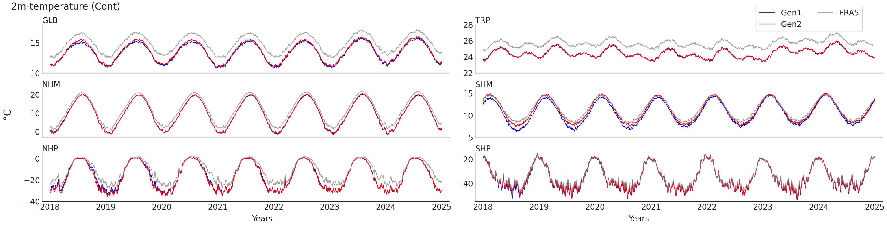
TS_cont_regions — Regional time series for the Cont
experiment.
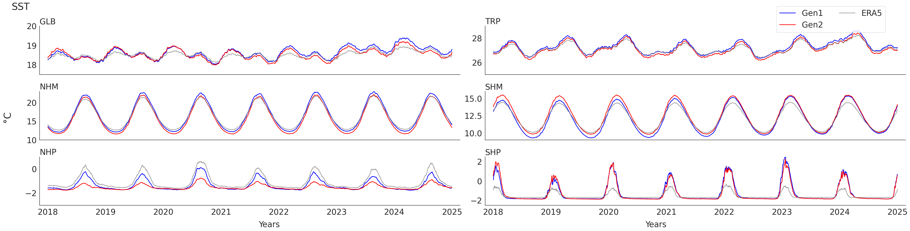
TS_sst_regions — Regional SST time series. Key
diagnostic for ocean initialization impact.
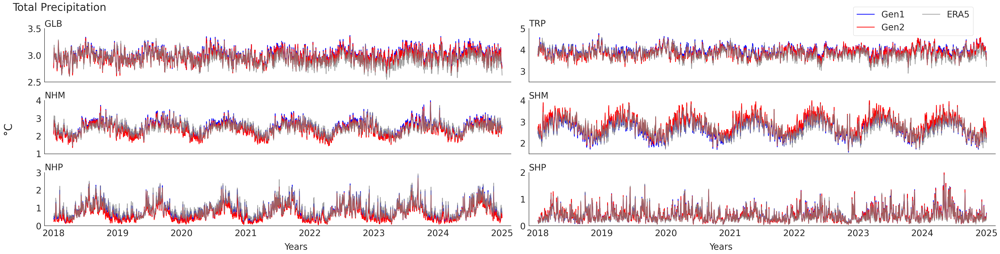
Ts_tp_regions — Regional precipitation time series
across all experiments.
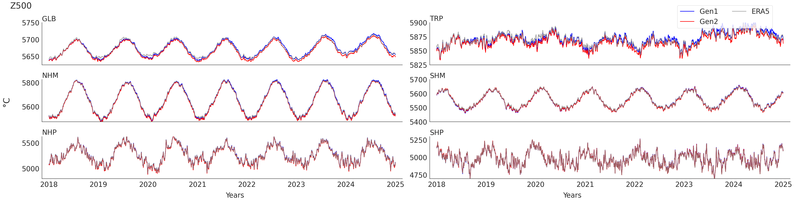
TS_z500_regions — Regional 500 hPa geopotential
height time series.
Model Bias & Evaluation
Annual and seasonal biases relative to ERA5 — G1 vs G2 comparison
Annual Bias — G1 vs G2
Annual mean biases across 2m temperature, SST, precipitation, and Z500 relative to ERA5. G1 (left) vs G2
(right).

G1_annual_bias — Annual mean bias, G1 vs ERA5.
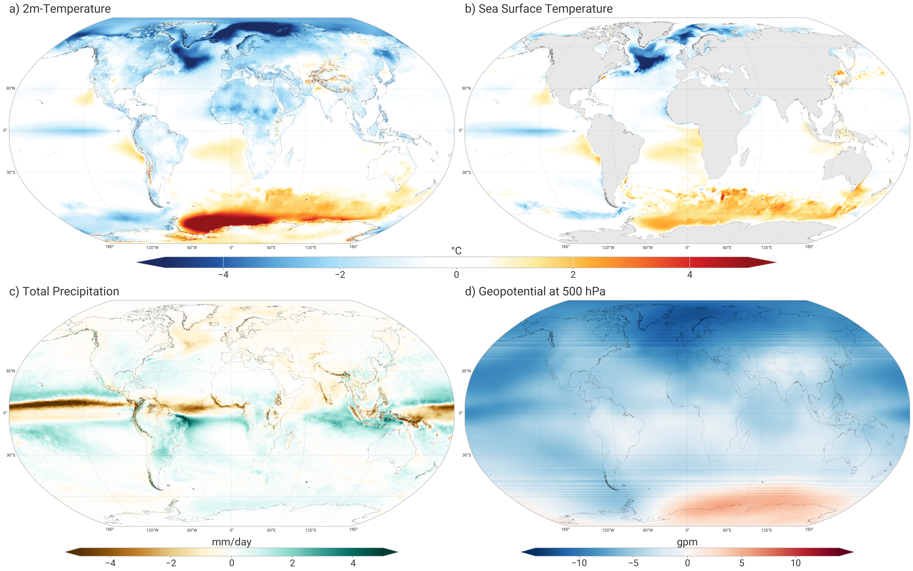
G2_annual_bias — Annual mean bias, G2 vs ERA5.
Analysis
▲ G2 Arctic cold bias: G2 shows a pronounced cold bias
(3–6 °C) over the Arctic and sub-polar N. Atlantic in both 2T and SST. While the EERIE historical
branch at 2017
provides a consistent coupled ocean state (resolving the mixed-IC issue), it carries a significantly
colder
polar ocean compared to the standalone FESOM spinup used in G1.
▼ G1 Arctic performance: G1 shows a much smaller cold bias in the
Northern high
latitudes, as its ERA5-initialised atmosphere over a warm-biased standalone FESOM spinup partially
masked
the high-latitude cooling seen in the fully coupled system.
▲ Southern Ocean residual: Both G1 and G2 share a persistent warm
bias in the Southern Ocean and around Antarctica (2–4 °C). This
is a structural issue in the FESOM configuration — not resolved simply by changing the IC source — and
would require a longer dedicated Southern Ocean spinup to address.
✅ Precipitation and Z500: Annual precipitation and Z500 bias
patterns are broadly similar between generations. Spectral nudging effectively controls large-scale
circulation regardless of IC choice; any small Z500 inter-generation differences are confined to the
polar regions where surface temperature biases feed back into the mid-troposphere.
Seasonal Biases — G1 vs G2
Seasonal breakdown (DJF / MAM / JJA / SON) of biases for G1 (left) and G2 (right).

G1_seasonal_biases — Seasonal biases in G1 across
DJF/MAM/JJA/SON.
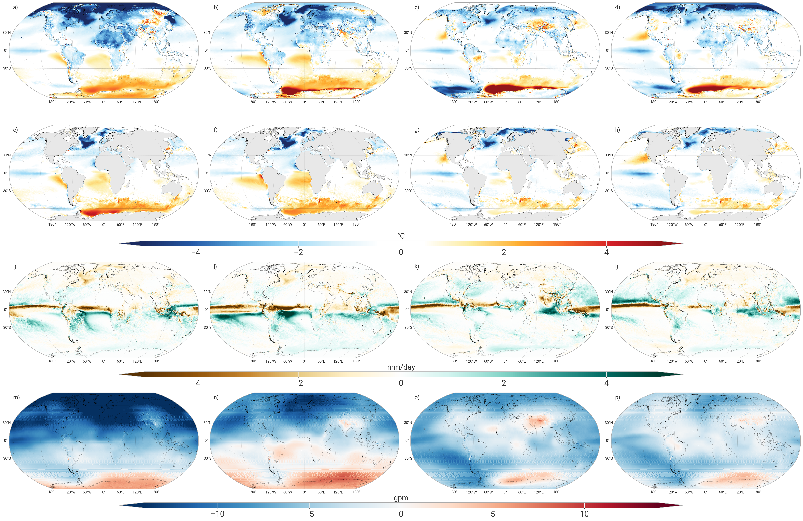
G2_seasonal_biases — Seasonal biases in G2 across
DJF/MAM/JJA/SON.
Analysis
▲ DJF (boreal winter) — strongest cold bias: The G2 cold bias at N.
high latitudes peaks in DJF, where sea-ice and ocean heat content differences from the EERIE coupled
state are most consequential. G1 displays a much weaker cold bias during winter in the Arctic.
▼ MAM (boreal spring): Spring also shows a clear pronounced cold
bias
in G2, consistent with sea-ice memory: a denser, colder EERIE Arctic ocean state delays warming and
keeps
surface temperatures below ERA5 through spring.
🌡 JJA (boreal summer): In summer, the Arctic cold bias in G2 and
G1 weakens but
persists. Mid-latitude and tropical biases in boreal summer are nearly identical between generations
in both magnitude and pattern.
✅ SON (boreal autumn): Autumn shows a relatively smaller G1–G2
contrast
compared to winter. Both generations display comparable bias patterns globally. The Southern Ocean bias
is consistent across all seasons and both generations, further confirming it as a structural model
limitation independent of IC choice.
Regional Time Series Comparison Summary
| Region |
Variable |
G1 vs ERA5 |
G2 vs ERA5 |
Key Difference (G1 to G2) |
| N. High Lats |
2m Temp / SST |
Warm bias due to standalone spinup |
Pronounced cold bias from coupled EERIE IC |
Transition from a warm bias (G1) to a stronger cold bias (G2). |
| Tropics / Mid-Lats |
2m Temp / SST |
Very close to ERA5 |
Very close to ERA5 |
Negligible difference; spectral nudging strongly constrains the signal. |
| S. High Lats |
2m Temp / SST |
Persistent warm bias |
Persistent warm bias |
Structural bias remains unchanged regardless of initialization generation. |
| Global |
Precipitation |
High fidelity in extra-tropics |
High fidelity in extra-tropics |
Both generations capture comparable synoptic-scale variability. |
| Global |
Z500 |
Near-perfect phase alignment |
Near-perfect phase alignment |
Nudging effectively controls large-scale circulation equally well. |
Temporal Variability — G1 vs G2
Global maps of temporal correlation for daily 2m-temperature (T2M), total precipitation, and 500 hPa
geopotential height (Z500) computed using ERA5 as a reference. G1 (top row) vs G2 (bottom row).
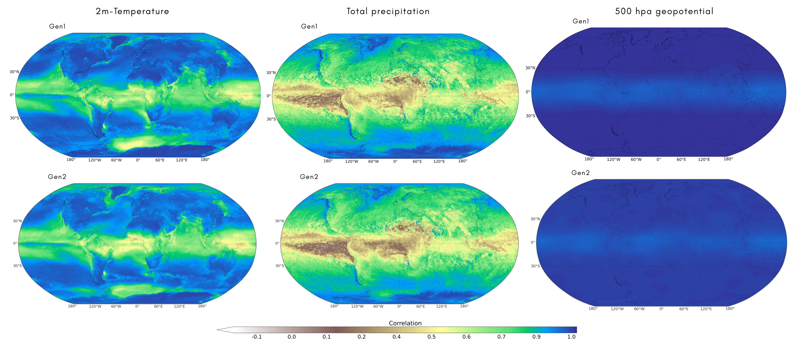
correlation_g1vsg2 — Temporal correlation maps comparing G1
and G2 to ERA5.
Analysis
✅ 500 hPa Geopotential (Right): Both G1 and G2 show extremely high
temporal correlation (near 1.0) globally. This confirms that the spectral nudging technique successfully
and consistently constrains the large-scale atmospheric circulation to match ERA5 in both model
generations.
📋 2m-Temperature (Left): Temporal correlation is very high across
both oceans and most land masses. Over oceans, this reflects the prescribed/spun-up SSTs and atmospheric
nudging. Over land, it reflects the nudged synoptic weather systems controlling daily temperature
variations. Both generations perform very well, with negligible differences.
▲ Total Precipitation (Center): As expected, temporal correlations
for precipitation are generally lower than for temperature or Z500, since precipitation is noisier and
less directly controlled by large-scale nudging. Correlations are higher in the extra-tropics (where
synoptic frontal systems dominate) and lower in the tropics/subtropics (where convective processes
dominate). Both G1 and G2 show very similar spatial patterns and overall high fidelity.
🌡 Overall conclusion: The transition from G1 to G2 (and the update
in ocean initialization) maintains the strong temporal correlation with ERA5. The spectral nudging
successfully synchronizes the synoptic-scale variability with the reference reanalysis in both
generations without degradation.
Capturing of Extremes
Evaluation of extreme events capturing capability using the present-day (Hist) background. Comparing
against observations (ERA5, MSWEP) and the AWI-CM1 coarse-resolution model for the July 2019 Paris
heatwave and September 2024 Storm Boris.
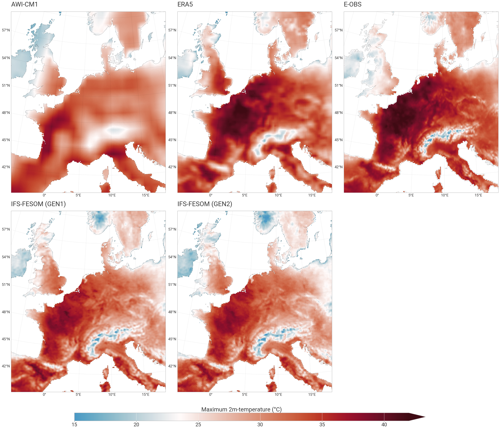
Paris_HW_eval — Evaluation of the July 2019 Paris heatwave.
Checking temperature peaks, spatial distribution, and Cont/Hist/Tp2K signals.
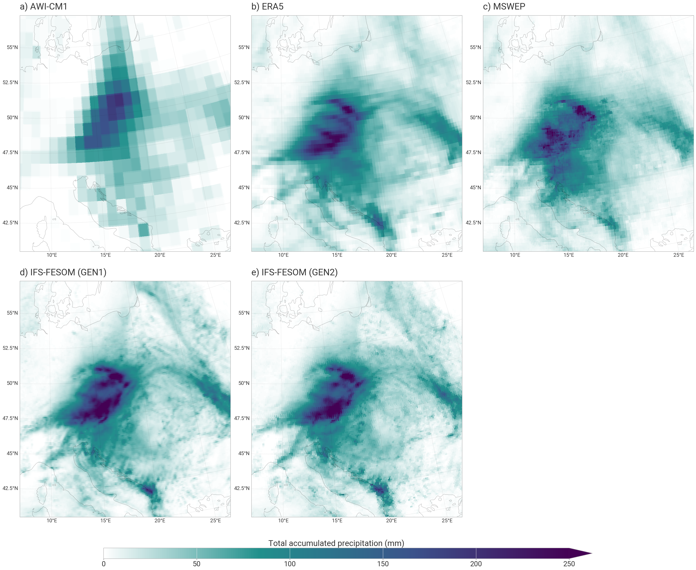
event_boris_eval — Storm Boris precipitation evaluation in G2
across all three climate backgrounds (Cont, Hist, Tp2K).
Event-based Storylines
How do the two extreme events look in G2? What changes relative to G1?
July 2019 Paris Heatwave
🆕 Ensemble upgrade: We now have 5 ensemble members extending
across the entire simulation period for G2. For the 2019 Paris heatwave, we go from evaluating
a single member in G1 to characterizing the storyline using the full 5-member spread in G2.
Comparing the July 2019 European heatwave storyline between G1 (1 member) and G2 (5 members). Displays
the climate signals (Cont, Hist, Tp2K) to highlight how the initialization update influences the maximum
temperature intensities and distributions across the continent.
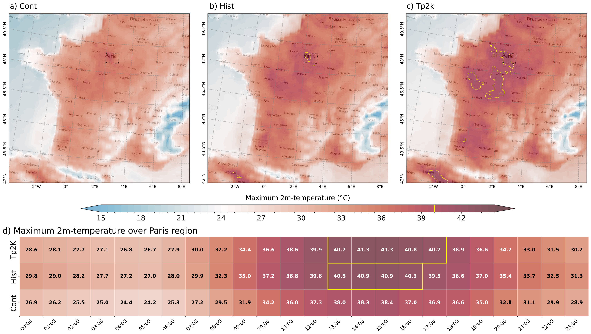
Paris_story_G1 — G1 July 2019 Paris heatwave storyline. Note
the single realization available during this period versus the colder high-latitude Cont
background.

Paris_story_G2 — G2 July 2019 Paris heatwave storyline
showcasing the ensemble spread (5 members) providing robust intensity estimates.
Inferences: Paris Heatwave
🔍 Impact of G2 Initialization & Ensemble: In G1, reliance on
a single ensemble member inherently limited our ability to assess the role of internal variability. With
G2's 5-member ensemble over the full period, we can confirm that the heatwave's spatial distribution and
peak intensity are robust features across realizations. Despite G2 manifesting a notably colder baseline
state at high latitudes in the Cont background, the thermodynamic escalation of the heatwave from Cont
to Hist, and onto Tp2K, scales consistently. The G2 ensemble spread thereby instils higher confidence in
quantifying the heatwave's intensity bounds under different climate scenarios.
September 2024 Storm Boris
Comparing the catastrophic September 2024 Storm Boris (12–16 Sep) precipitation storylines between G1 and
G2. Here both display 5 members as the G1 ensemble was spun up towards the end of 2024. The Cont, Hist,
and Tp2K backgrounds demonstrate the thermodynamic limits on extreme rainfall totals across Central
Europe for both generations.
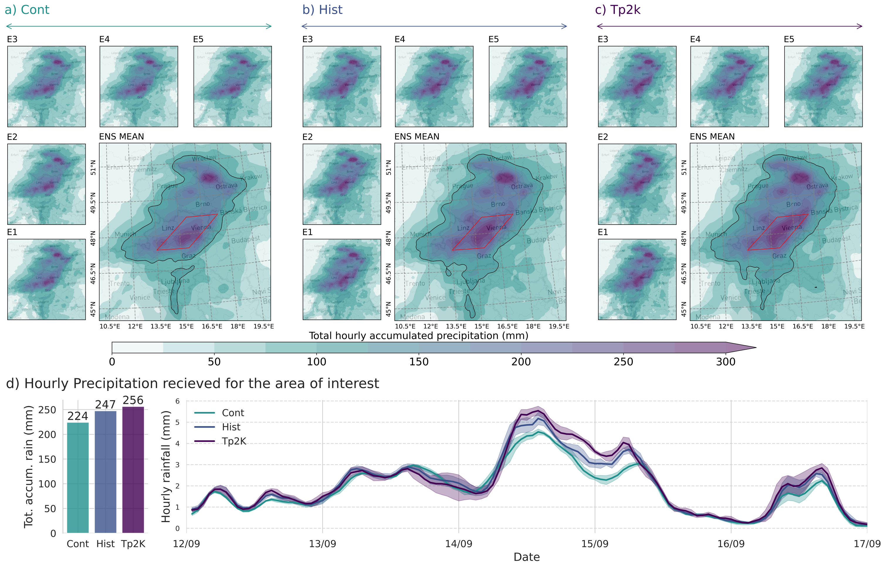
Boris_story_G1 — G1 Storm Boris storyline.

Boris_story_G2 — G2 Storm Boris storylines.
Inferences: Storm Boris
🔍 Impact of G1 vs G2: While both G1 and G2 uniquely benefit from
a 5-member spread for the late-2024 Storm Boris event, comparing the two generations solidifies our
understanding of extreme precipitation scaling. Both versions exhibit a strong thermodynamic expansion
of the extreme rainfall area (>100 mm) from the cooler Cont climate to the present-day Hist, and
further into the warmer Tp2K future. The persistence of this robust storyline in G2—despite the
comprehensive switch to a fully-coupled EERIE initial state—demonstrates that the governing atmospheric
nudging and background climate warming strictly dominate the extreme precipitation signal, overpowering
any minor state changes introduced by the ocean initialization update.
Ensemble Spread & Summary
5-member ensemble for the complete simulation period (G2 upgrade) and
overall G1→G2 change summary
🆕 G2 upgrade: In G1, 5 ensemble members existed only for the last
part of 2024. In G2, all five members run the full period, enabling robust uncertainty
quantification throughout the entire simulation.
Ensemble Mean and Standard Deviation
Five ensemble members (E1–E5) were generated for the Storm Boris period by varying the nudging-off
duration (1–4 days). This plot shows the spread in G2.
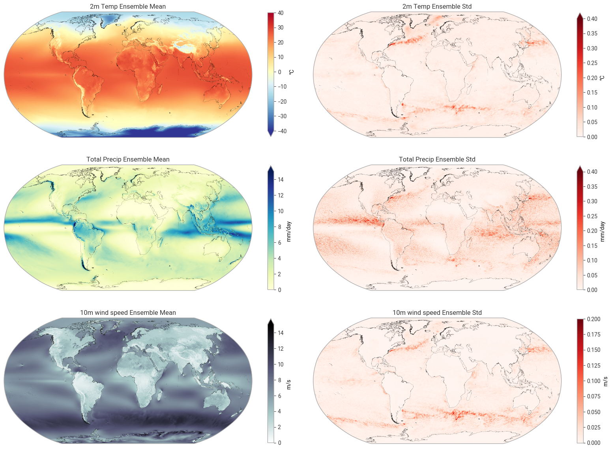
ensemble_mean_std — Ensemble mean and standard deviation
across E1–E5 in G2. Assesses whether the new initialization reduces or changes ensemble spread
relative to G1.
Overall G1 → G2 Summary
| Aspect |
G1 |
G2 |
Change |
| Model version |
Original |
Bugfixed + new runoff scheme |
Improved |
| Cont IC |
ERA5 atm + standalone FESOM ocean (1945–49) |
EERIE control branch (1950) |
Consistent |
| Hist IC |
ERA5 atm + standalone FESOM ocean (2012–16) |
EERIE historical branch (2017) |
Consistent |
| Tp2K IC |
NextGEMS branch (2040) |
EERIE projection branch (2050) |
Consistent |
| Cross-experiment IC consistency |
✗ Mixed (ERA5/NextGEMS) |
✓ All from EERIE framework |
Resolved |
| Ocean spinup quality |
5-yr standalone |
Long EERIE coupled spinup |
Much better |
| Storm Boris Cont→Hist signal |
+19.4% area >100 mm |
+11.4% area >100 mm |
−8.0% |
| Storm Boris Hist→Tp2K signal |
+3.5% area >100 mm |
+9.7% area >100 mm |
+6.2% |
| Global mean warming Cont→Hist |
+1.3 K |
+0.9 K |
−0.4 K ↑ |
| Global mean warming Hist→Tp2K |
+1.0 K |
+1.3 K |
+0.3 K ↑ |
| Ensemble coverage |
5 members, end-2024 only |
5 members, full period |
Upgrade |
· IFS-FESOM km-scale storyline simulations ·
Amal John · G1 vs G2 comparison ·